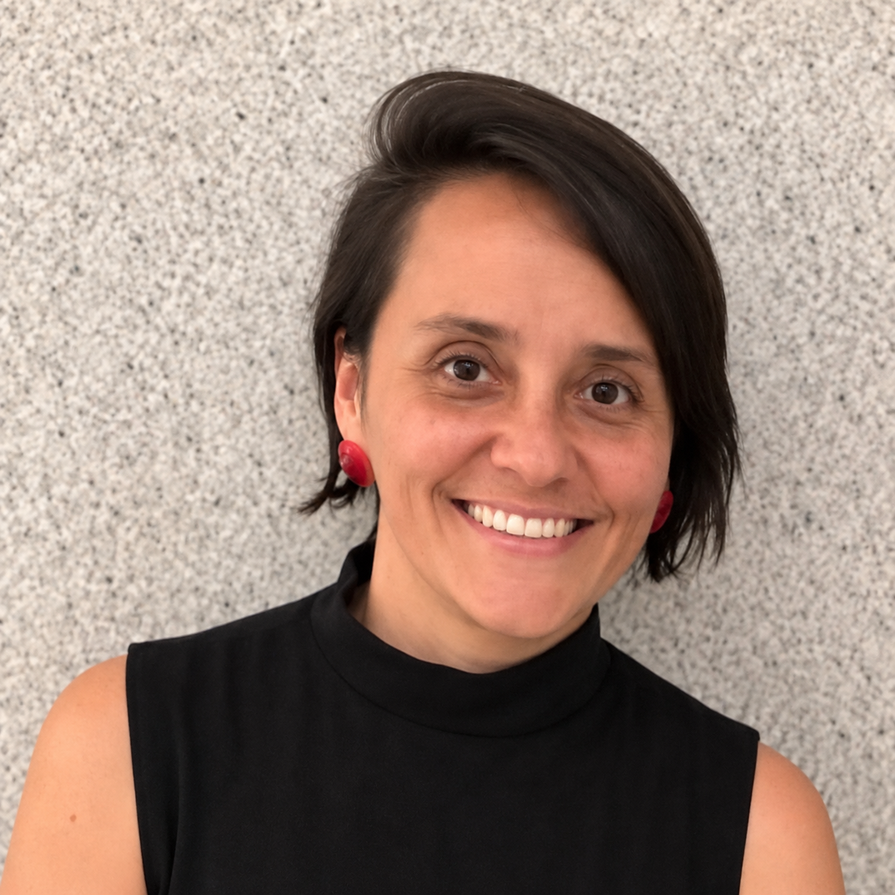

Maíta Muñoz
Aima Toxicologia
Classificação de impurezas mutagênicas segundo o ICH M7: da avaliação estrutural à revisão por especialista apoiada por IAMinicurrículo
Maíta é Química pela Universidad del Quindío (Colômbia), Mestre em Toxicologia pela Universidade de São Paulo (USP), com mais de 15 anos de experiência na indústria farmacêutica. Tem sólida experiência na avaliação de risco toxicológico, tendo atuado como Toxicologista na indústria farmacêutica brasileira, onde implementou o uso de ferramentas in silico em diversas frentes, de acordo com regulamentações da Anvisa e guias do ICH. Mais recentemente, trabalhou como Cientista de Aplicação e Consultora Científica no Reino Unido, sendo responsável por implementar o uso de plataformas de Toxicologia Computacional nos países hispanofalantes da América Latina, com foco na avaliação de segurança química. Atualmente, é Diretora Científica na Aima Toxicologia, empresa cujos pilares de atuação são consultoria, educação, ciência e políticas públicas.